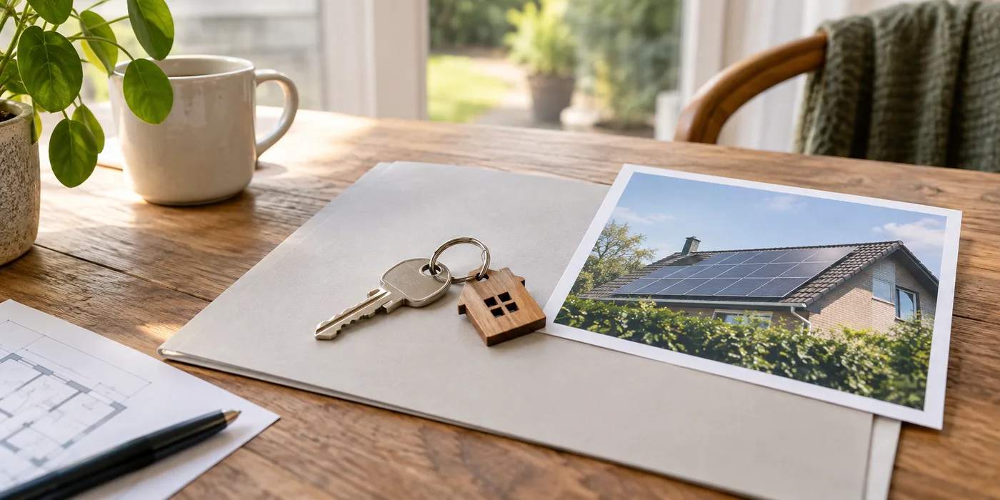

Vraag meer dan de jaarlijkse opbrengst
Informeer naar plaatsingsdatum, type apparatuur, keuring, schema’s en wijzigingen. Vraag wat er precies mee overgedragen wordt en of er afspraken met derden bestaan. Laat contractuele vragen door de betrokken adviseur beoordelen. Een aantrekkelijk opbrengstcijfer vertelt niet wie de installatie bezit of welke verplichtingen eraan verbonden zijn.
Bespreek eigendomsoverdracht afzonderlijk
Fluvius beschrijft een administratieve eigendomsoverdracht via Mijn Fluvius. Vraag hoe de huidige en toekomstige eigenaar die overdracht organiseren. Informeer ook naar historische regelingen of certificaten zonder te veronderstellen dat elk voordeel automatisch overgaat. Bewaar de relevante correspondentie samen met de verkoopdocumenten.

Denk aan app en onderhoud
Vraag of de monitoring naar een eigen account kan worden overgezet en wie de onderhoudshistoriek heeft. Laat storingen en vervangen onderdelen benoemen. Controleer of de installateur nog bereikbaar is. Maak bij de sleuteloverdracht een lijst van ontvangen documenten en nog ontbrekende gegevens, zodat de informatie niet versnipperd raakt.
Maak onzekerheden onderdeel van je vragenlijst
Als schema’s of historie ontbreken, noteer dat expliciet en vraag welke beoordeling nodig is. Laat de verkoop niet steunen op een technische garantie die niemand heeft gegeven. Je kunt onderscheid maken tussen aanwezige documenten, verklaringen van de verkoper en punten die een installateur nog moet onderzoeken. Dat maakt het gesprek met adviseurs overzichtelijker. Bewaar de antwoorden zodat je na de aankoop weet welke informatie bevestigd was en welke controle nog gepland moet worden.
Een praktisch voorbeeld
De verkoper toont de productie op zijn telefoon. Vraag daarnaast hoe je na de aankoop zelf toegang krijgt. Zonder die afspraak kun je apparatuur bezitten maar de monitoring missen.
Illustratief scenario, geen klantcase.
Neem dit mee naar je gesprek
- Installatiegegevens en keuring
- Eigendom en eventuele contracten
- Administratieve overdracht
- Monitoring en onderhoudshistoriek
Veelgestelde vraag
Volstaat het EPC om de PV-installatie te begrijpen?
Vraag ook het technische en administratieve installatiedossier. Die documenten beantwoorden andere vragen.
Bron en achtergrond
Fluvius: officiële of technische achtergrond bij dit onderwerp ↗
Geraadpleegd op 13 oktober 2026. De praktische checklist en het voorbeeld zijn redactionele uitwerkingen. Fabrikantinformatie geldt voor de beschreven producten; ze is geen algemene garantie voor andere systemen.
Wat betekent dit voor jouw woning?
Gebruik de calculator voor een eerste indicatie. Een vakman beoordeelt jouw situatie en bevestigt de uitvoering en definitieve prijs.
Bekijk de zonnepanelencalculator →